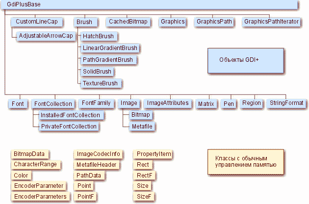

Часть 1. Введение
Итак Что же такое GDI+ ?
Не вдаваясь в тонкости сразу скажу что GDI+ на самом деле является динамической библиотекой GdiPlus.dll. в которой реализованы команды и функции по работе с графикой, начиная от рисования линий заканчивая координатными преобразованиями и работой с прозрачностью. Как говорится на любой вкус. Более подробную информацию вы можете просмотреть в статье Виталия Брусенцева "GDI+: графика нового поколения" (если Вас не смущает реализация на C++)
Итак, после десятка лет царствования интерфейса GDI, появилась библиотека, призванная заменить устаревшую версию ядра и предоставляющею разработчикам все достоинства своего предшественника вкупе со множеством новых мощных возможностей. Как вы все знаете в DELPHI до сих пор используется библиотека GDI предоставляющая разработчику скудный (по сегодняшним меркам) набор функций для рисования, поэтому программистам приходится идти на всякие ухищрения при работе с графикой, используя DirectX, OpenGL или библиотеки доступа непосредственно к видеопамяти. Данная библиотека существенно упростить создание графических офисных приложений ( я намеренно сделал ставку на офисные, дабы избежать апологетов DirectX, OpenGL и пр.) Как я и говорил к сожалению в DELPHI не включили заголовки этой библиотеки, но это не беда силами сторонних разработчиков данные заголовки были созданы и для DELPHI.
Итак, для что нам надо чтобы использовать все прелести данной библиотеки.
Для начала давайте определимся, те кто работает на Windows XP и .NET Server. могут не беспокоится - данная библиотека уже включена в данные операционные системы. Для других увы - придется скачать с официального сервера Microsoft файл gdiplus_dnld.exe (размером чуть более 1 Mb) и при помощи него установить данную библиотеку в системный каталог Windows 98/ME, Windows NT SP6 или Windows 2000. Сразу-же оговорюсь что поддержка Windows 95 не предусмотрена и о ней нет никакого упоминания на сайте Microsoftа. Причем теоретически я могу предположить что данная библиотека может будет работать. Ну еще раз оговорюсь в Windows 95 пробуйте сами.
Итак файл успешно скачан, установлен и предвидя следующий вопрос сразу же говорю для работы с библиотекой вам потребуются заголовочные файлы для Delphi взять свежие можно с http://www.progdigy.com или скачать архив Header_pas.zip прилагаемый со статьей.
Ну, если у Вас все готово - продолжим.
Ниже приведена иерархия классов GDI+, опубликованная в статье Виталия Брусенцева. Там же можно прочесть некоторые подробности о классах, ее составляющих.
Итак для начала подключим заголовочные файлы GDI+ в uses модуль вашей программы
uses
Windows, Messages, SysUtils, Variants, Classes, Graphics, Controls, Forms,
Dialogs, ComCtrls, ExtCtrls, ToolWin,
GDIPAPI,GDIPOBJ;
Как видите их всего два - GDIPAPI,GDIPOBJ;
Продолжим , инициализируем библиотеку к работе -
Для начала опишем ее
var
graphicsGDIPlus : TGPGraphics;
как и было раньше заявлено в конструкторе объекта TGPGraphics требуется контекст устройства (DC) куда библиотека будет пере направлять всю графику. Теперь можно и нарисовать что-то в данном примере (см. архив GDIDemo) , в обработчик события OnPaint объекта PaintBox мы выведем , как и всегда при работе с новым языком или библиотекой следующий, знакомый каждому программисту текст "Hello GDI+" четырьмя разными стилями - обычным без сглаживания, обычным с сглаживанием, с градиентной заливкой, с текстурной заливкой и под углом 45 градусов.
procedure TForm1.PaintBox1Paint(Sender: TObject);
Const
StrHello = 'Hello GDI+';
var
R : TRect;
FontFamily : TGPFontFamily;
Font : TGPFont;
SolidBrush : TGPSolidBrush; // Заливка непрерывным цветом
GradientBrush : TGPLinearGradientBrush; // Заливка линейным градиетом
TextureBrush : TGPTextureBrush; // Заливка текстурой градиетом
Image : TGPImage; // Объект - Изображение
Matrix : TGPMatrix; // Матрицы
begin
graphicsGDIPlus := TGPGraphics.Create(PaintBox1.Canvas.Handle);
// Имя шрифта
FontFamily := TGPFontFamily.Create('Times New Roman');
// Шрифт
Font := TGPFont.Create(FontFamily, 32, FontStyleRegular, UnitPixel);
// Создаем объект для непрерывной заливки
SolidBrush := TGPSolidBrush.Create(MakeColor(255, 0, 0, 255));
// Рисование текста без антиалиасинга с закраской синим цветом
// Установка стиля отрисовки текста - TextRenderingHintSingleBitPerPixel
graphicsGDIPlus.SetTextRenderingHint(TextRenderingHintSingleBitPerPixel);
graphicsGDIPlus.DrawString(StrHello, -1, Font, MakePoint(1, 10.0), solidBrush);
// Рисование текста c антиалиасингом с закраской синим цветом
// Установка стиля отрисовки текста - TextRenderingHintAntiAlias
graphicsGDIPlus.SetTextRenderingHint(TextRenderingHintAntiAlias);
graphicsGDIPlus.DrawString(StrHello, -1, Font, MakePoint(1, 40.0), solidBrush);
// Рисование текста c антиалиасингом с закраской градиентом
R.X := 1;
R.Y := 1;
R.Width := 100;
R.Height := 40;
// Создаем объект для градиентной заливки
GradientBrush := TGPLinearGradientBrush.Create(R,
MakeColor(255, 255, 255, 255),
MakeColor(255, 0, 0, 255),
LinearGradientModeForwardDiagonal);
graphicsGDIPlus.SetTextRenderingHint(TextRenderingHintAntiAlias);
graphicsGDIPlus.DrawString(StrHello, -1, Font, MakePoint(1, 70.0), GradientBrush);
// Рисование текста c антиалиасингом с закраской текстурой
// Шрифт заного создаем
Font.Free;
Font := TGPFont.Create(FontFamily, 70, FontStyleRegular, UnitPixel);
Image := TGPImage.Create('01.jpg');
TextureBrush := TGPTextureBrush.Create(image);
graphicsGDIPlus.SetTextRenderingHint(TextRenderingHintAntiAlias);
graphicsGDIPlus.DrawString(StrHello, -1, Font, MakePoint(1, 100.0), TextureBrush);
// Рисуем под углом - используем трансформацию
// Шрифт заного создаем
Font.Free;
Font := TGPFont.Create(FontFamily, 32, FontStyleRegular, UnitPixel);
graphicsGDIPlus.RotateTransform(-45); // производим
graphicsGDIPlus.DrawString(StrHello, -1, Font, MakePoint(-200, 200.0), TextureBrush);
graphicsGDIPlus.ResetTransform; // сбрасываем
// Не забудьте высвободить память
Image.Free;
GradientBrush.Free;
TextureBrush.Free;
SolidBrush.Free;
graphicsGDIPlus.Free;
end;
Итак, для начала не плохо. В следующей статье мы разберем вывод примитивов, вывод графики, использование графических контейнеров. Вот в принципе и все, набор классов библиотеки прост и очевиден, ничего особо сложного в нем нет, но для более подробной информации по библиотеке GDI+ советую обратится на сайт альма-матер Microsoft или запастить демками с того-же http://www.progdigy.com
С уважением к коллегам, Дмитрий Кузан.